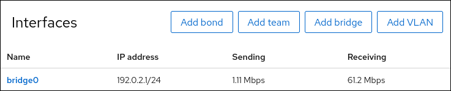

Configuring a network bridge by using the RHEL web console
-
Two or more physical or virtual network devices are installed on the server.
-
To use Ethernet devices as ports of the bridge, the physical or virtual Ethernet devices must be installed on the server.
-
To use team, bond, or VLAN devices as ports of the bridge, you can either create these devices while you create the bridge or you can create them in advance as described in:
-
You have installed the RHEL 9 web console.
-
You have enabled the cockpit service.
-
Your user account is allowed to log in to the web console.
For instructions, see Installing and enabling the web console.
Use the RHEL web console to configure a network bridge if you prefer to manage network settings using a web browser-based interface.
-
By default, the bridge uses a dynamic IP address. If you want to set a static IP address:
-
Click the name of the bridge in the Interfaces section.
-
Click Edit next to the protocol you want to configure.
-
Select Manual next to Addresses, and enter the IP address, prefix, and default gateway.
-
In the DNS section, click the + button, and enter the IP address of the DNS server. Repeat this step to set multiple DNS servers.
-
In the DNS search domains section, click the + button, and enter the search domain.
-
If the interface requires static routes, configure them in the Routes section.

-
Click Apply
-
-
Select the Networking tab in the navigation on the left side of the screen, and check if there is incoming and outgoing traffic on the interface:
